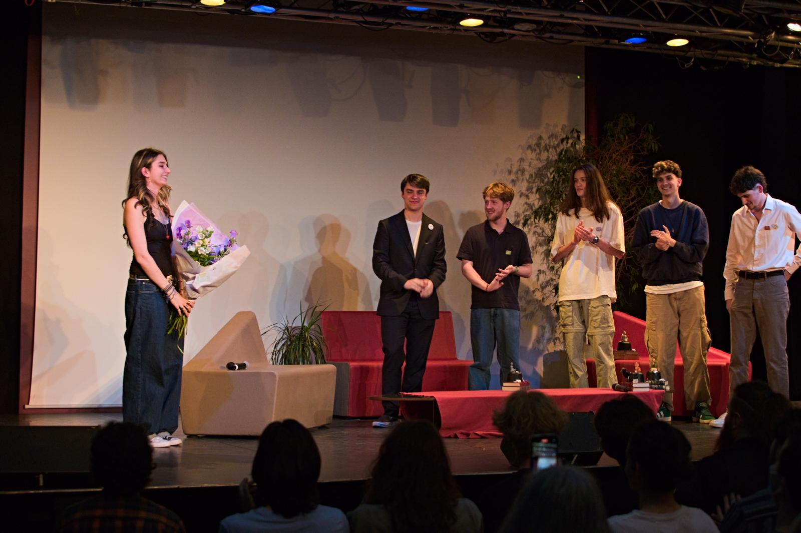
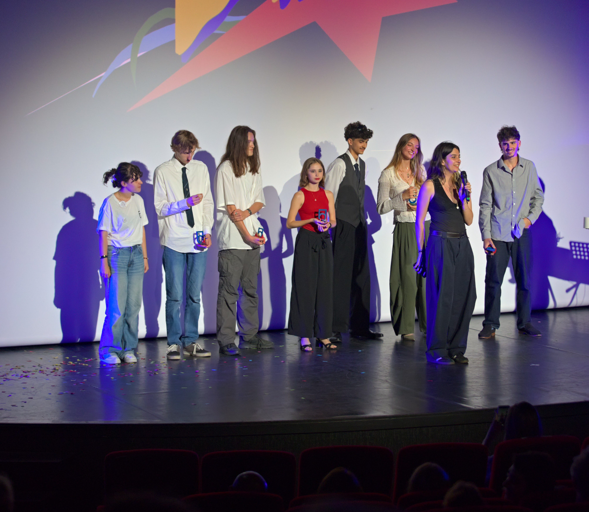

Unifive Awards
Unifive Awards est un festival de courts métrages né dans le but d’encourager les jeunes à se lancer dans leurs premières expériences cinématographiques. Le festival s’apprête aujourd’hui à célébrer sa quatrième édition.
A l’origine de la naissance du projet, je participe activement à son développement
et assure depuis l’origine l’organisation générale,
la direction artistique ainsi que la communication du festival.
Ce projet d’envergure, exigeant et profondément formateur, m’a permis d’acquérir de nombreuses
compétences et continue de nourrir mon apprentissage au quotidien.

